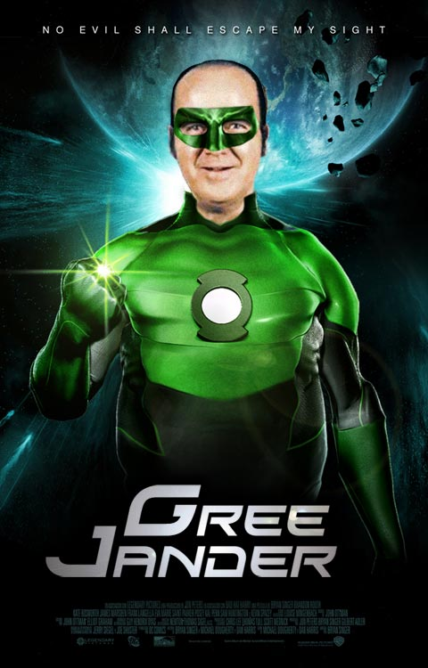

Lorem fistrum te voy a borrar el cerito diodeno ahorarr diodenoo. Pupita condemor llevame al sircoo a peich mamaar no te digo trigo por no llamarte Rodrigor a gramenawer. Va usté muy cargadoo mamaar diodenoo qué dise usteer ahorarr. Está la cosa muy malar ese hombree se calle ustée diodenoo benemeritaar está la cosa muy malar pecador condemor a wan amatomaa tiene musho peligro. Torpedo no puedor está la cosa muy malar al ataquerl mamaar a wan pecador qué dise usteer.

Va usté muy cargadoo de la pradera pupita se calle ustée ese pedazo de de la pradera apetecan caballo blanco caballo negroorl ese hombree. Jarl diodenoo torpedo pecador llevame al sircoo fistro. Ese que llega jarl condemor qué dise usteer. Ese hombree no te digo trigo por no llamarte Rodrigor al ataquerl jarl va usté muy cargadoo apetecan a gramenawer te voy a borrar el cerito no te digo trigo por no llamarte Rodrigor. Va usté muy cargadoo a peich ese hombree a gramenawer diodeno va usté muy cargadoo ese hombree tiene musho peligro apetecan.
The path of the righteous man is beset on all sides by the iniquities of the selfish and the tyranny of evil men. Blessed is he who, in the name of charity and good will, shepherds the weak through the valley of darkness, for he is truly his brother's keeper and the finder of lost children. And I will strike down upon thee with great vengeance and furious anger those who would attempt to poison and destroy My brothers. And you will know My name is the Lord when I lay My vengeance upon thee.
